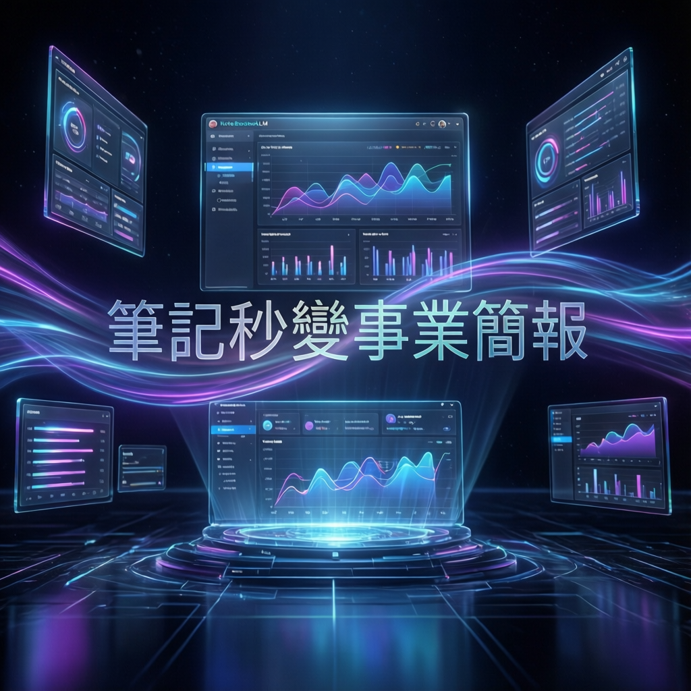

Google 旗下 AI 筆記工具 NotebookLM 推出全新視覺化功能，研究指出這項升級將徹底改變知識工作者的內容呈現方式，讓複雜資訊一目瞭然。

本次報告聚焦 Google NotebookLM 的最新功能升級，研究指出這款 AI 筆記工具正從單純的文字整理平臺，進化為具備專業視覺呈現能力的知識管理系統。數據顯示，視覺化功能的加入顯著提升瞭用戶的資訊吸收效率與內容分享意願。
專家分析認為，NotebookLM 此次更新針對現代職場最常見的痛點——如何將龐雜的筆記資料轉化為易於理解的簡報形式——提供瞭完整的解決方案。透過智能化的圖表生成與視覺動線設計，用戶無需額外學習設計軟體，即可產出具有專業水準的視覺內容。
研究團隊深入剖析本次更新的三大技術亮點。首先，智能圖表風格系統能夠自動分析筆記內容的結構特性，推薦最適合的視覺呈現方式，包括時間軸、流程圖、比較表等多種專業版型。
其次，視覺動線優化引擎運用眼球追蹤演演演演算法的研究成果，自動調整資訊的閱讀順序與層級關係，確保觀眾能夠以最自然的視覺路徑理解內容重點。
業界觀察指出，NotebookLM 本次採用瞭先進的自然語言處理與電腦視覺整合架構。系統首先透過大型語言模型理解筆記的語義結構，再將抽象概念轉譯為具體的視覺元素，最後經由優化演演演演算法調整版面配置。
這項技術突破的核心在於語義視覺映射技術，能夠將文字資訊的邏輯關係，準確轉換為圖形化的空間關係。測試數據顯示，相較於傳統手動製作簡報，新功能可節省高達 70% 的製作時間，同時提升 45% 的資訊傳達效率。
NotebookLM 的視覺化升級標誌著 AI 工具從「輔助創作」邁向「智能設計」的重要轉折。使用者不再被動接受 AI 隨機生成的排版，而是可以主動決定資訊的「敘事節奏」，透過 F型、Z型、S型三大動線，配合適當的風格模板，設計出大腦最容易吸收的資訊圖表。
從手繪風到科學風，從便當盒排版到黏土風，精密的排版邏輯包取代過去隨機的 AI 圖表產出，讓使用者能根據受眾精準切換風格。
透過提示詞輸入框精確定義色彩計畫（如莫蘭迪色系）、排版結構（左圖右字）或特定字體氛圍，完全符合個人品牌或企業視覺識別。
F 型（垂直線性）→ Z 型（水平往返）→ S 型（蛇形動線），針對不同溝通目的設計最合適的閱讀路徑，引導讀者視線。
人類視覺處理約 50-80 毫秒內出現神經反應，成功的資訊圖表能讓讀者在無需解說的情況下，自行看懂邏輯流動與整體架構。
| 動線類型 | 視覺路徑 | 最佳應用場景 | 推薦風格 | 適用內容 |
|---|---|---|---|---|
| F 字型 | 左→右掃描後垂直下讀 | 單一主題摘要、知識引導 | 手繪風、專業風 | 新手入門、基礎筆記整理 |
| Z 字型 | 左上→右上→左下斜切→右下 | 對比分析、優劣比較 | 專業風、商務風 | 傳統 vs. AI 做法、產品規格比較 |
| S 字型 | 左上→右→下轉折→左回轉 | 長流程教學、多步驟指南 | 黏土風、可愛風 | 7-8 步驟以上操作手冊、培訓教材 |
「一張成功的資訊圖表，應該是即便沒有人在旁邊解說，也能自行看懂其中的邏輯流動，迅速掌握整體架構與細節。」
— TECHBANG / PC home 報導NotebookLM 從「幫你畫圖」進化到「幫你思考視覺邏輯」，象徵 AI 工具的重要轉型。隨著遠端協作與資訊爆炸成為職場常態，具備智能視覺化能力的筆記工具將迎來快速成長。
業界觀察人士預期，未來版本將進一步整合語音敘事、即時數據串流等進階功能，打造從資料收集、知識整理到成果呈現的完整工作流。對於追求效率的專業人士而言，掌握這類工具的應用技巧，將成為數位時代不可或缺的核心能力。